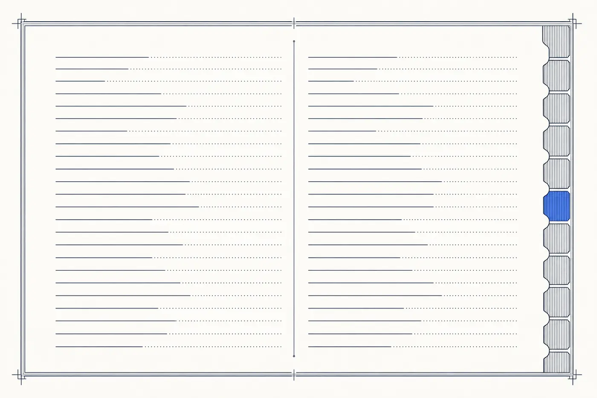

REFERENCE / GLOSSARY
The growth-vendor glossary
204 terms, defined in plain English — the working vocabulary of the ten disciplines this atlas indexes. Terms link into the discipline guides where one exists.
The ten disciplines
Sales · Marketing · SEO · Thought Leadership · Creative Strategy · Automation · Demand Gen · Content Marketing · Social Media Marketing · AI Marketing
A
- A/B testing
- Running two versions of an asset — a page, an email, an ad — against each other to learn which performs better before committing budget to either.
- ABM (account-based marketing) GUIDE →
- A demand strategy that targets named high-value accounts with tailored campaigns instead of broadcasting to a whole market.
- Above the fold
- The portion of a webpage visible without scrolling. What appears above the fold gets an outsized share of attention — the reason headline, offer, and primary CTA fight for it.
- Account executive (AE)
- The salesperson who owns closing a deal — running discovery, giving demos, negotiating contracts. Distinct from the SDR who books the meeting.
- Account manager (AM)
- The relationship owner post-sale, responsible for retention, expansion, and reference activity within a customer account.
- Ad creative
- The image, video, and copy an ad consists of. In paid social especially, creative — not targeting — is what most decides whether a campaign works.
- Ad fatigue
- The decline in an ad's performance as an audience sees it repeatedly. The signal to refresh creative before a channel stops working.
- Ad Rank
- Google Ads' internal score that decides ad position — a function of bid, expected CTR, ad relevance, and landing-page experience.
- AEO (answer engine optimization)
- Structuring content so AI answer surfaces and voice assistants can quote it directly — schema, speakable markup, and question-shaped pages.
- AI marketing GUIDE →
- The use of machine learning and generative models to execute or optimize marketing work: content systems, personalization, prediction, and automation.
- AI Overview
- The AI-generated answer Google places at the top of many search results. Content that gets cited inside it wins visibility that no longer requires the click.
- AOV (average order value)
- Total revenue divided by orders. Lifting AOV is often faster than lifting conversion rate and always cheaper than acquiring more traffic.
- ARR (annual recurring revenue)
- The annualized value of a subscription business's active contracts. The metric most SaaS is valued on.
- Attribution
- The practice of assigning credit for a sale to the marketing touches that produced it — the foundation of knowing which spend works.
- Attribution model
- The rule that decides how credit for a sale gets split across the marketing touches that led to it — first-touch, last-touch, linear, time-decay, data-driven. Every model tells a different story.
- Audience
- A defined group of people a message is aimed at. The unit paid platforms buy against, and the level marketing is planned at.
B
- Backlink
- A link from another site to yours. Search engines read backlinks from credible sites as votes of authority, which is why link earning is a core SEO discipline.
- BANT
- A four-part sales qualification framework — Budget, Authority, Need, Timeline. Older but still ubiquitous shorthand in enterprise sales.
- Behavioral targeting
- Serving ads or content based on what a user has done — pages visited, actions taken — rather than who they demographically are.
- Bottom of funnel
- The stage where a buyer is actively comparing vendors and ready to purchase; content and campaigns here focus on proof and conversion.
- Bounce rate
- The share of visitors who leave a page without interacting. Directional only in 2026 — high bounce on a well-answered informational page is fine.
- Brand awareness
- The share of a target market that can name a brand unaided. The metric brand marketing is accountable for.
- Brand identity GUIDE →
- The visual and verbal system a company presents — logo, typography, color, voice — and the consistency rules that make it recognizable.
- Brand positioning
- The deliberate choice of what a company means in the buyer’s mind relative to alternatives — the strategic decision creative work expresses.
- Brand safety
- Whether ad inventory or content adjacencies could damage the brand — the reason programmatic buys need placement controls, not just audience filters.
- Brand voice
- The consistent verbal style — tone, cadence, vocabulary — a brand uses across every channel. Enforced through guidelines, not by hoping.
- Buyer journey
- The path from a buyer's first awareness of a problem to purchase and beyond. Marketing programs mapped to it perform; ones that aren't don't.
- Buyer persona
- A structured profile of a target buyer — role, goals, objections, buying triggers — used to keep campaigns aimed at a real person rather than a demographic.
C
- CAC (customer acquisition cost)
- Total sales and marketing cost divided by customers won in the period. The number every growth channel ultimately answers to.
- Call-to-action (CTA)
- The specific action a page or ad asks the visitor to take next. One CTA per page is a good rule; two competing CTAs is the fastest way to halve conversion.
- Cannibalization
- When a new campaign, page, or product steals traffic or sales from an existing one instead of adding to the total. Common failure mode of PPC targeting brand keywords.
- Case study
- A structured narrative of how a specific customer used a product to solve a specific problem, with numbers. The single most reliable middle-funnel asset in B2B.
- Chatbot
- A conversational interface — rule-based or AI-driven — that handles inbound questions or qualification without a human. Increasingly LLM-backed.
- Churn
- The rate at which customers leave. High churn converts acquisition spend into a leaky bucket and is usually a retention problem, not a marketing one.
- CLV (customer lifetime value)
- Same measure as LTV; the term used more often in retail and e-commerce than in SaaS.
- Cold email
- Unsolicited direct email to a prospect with no prior relationship. The core mechanism of most outbound demand generation programs.
- Cold outreach GUIDE →
- Contacting prospects who have no prior relationship with the company, typically via email or LinkedIn sequences; the core motion of outbound demand generation.
- Competitor analysis
- Systematic study of what competitors are doing across positioning, pricing, content, and channels. Continuous, not one-time.
- Content audit
- A structured inventory of existing content assets against performance and business goals. Almost always the first project a new content lead runs.
- Content calendar
- The planning instrument of a content program: what publishes, where, when, and for which audience and keyword.
- Content marketing GUIDE →
- Attracting buyers by publishing material they actually want — articles, video, guides — rather than interrupting them with ads.
- Content pillar
- A comprehensive foundational piece of content on a broad topic, from which cluster of related pieces branch. The core of modern topical-authority strategy.
- Conversion funnel
- The staged path a visitor takes toward a desired action, with drop-off measured at each step. What CRO practitioners optimize.
- Conversion rate
- The percentage of visitors or leads who take the desired action. Small conversion-rate changes compound across a funnel more than most budget changes.
- Cookie
- A small file a website stores in a browser to track state or identity across visits. Increasingly restricted by browsers and regulation; third-party cookies are functionally dead.
- Copywriting
- Writing whose purpose is to move the reader to action — an inquiry, a purchase, a click. Distinct from content writing, which is meant to inform or entertain.
- CPA (cost per acquisition)
- What it costs in ad spend to acquire one customer. The primary paid-media efficiency metric.
- CPC (cost per click)
- What an advertiser pays for one click on an ad. Set by auction on most platforms.
- CPL (cost per lead)
- What it costs in ad spend to generate one lead. Directional but easily gamed — a cheap lead sales won't work is worthless.
- CPM (cost per mille)
- Cost per thousand ad impressions. The unit brand and reach campaigns buy against.
- Creative strategy GUIDE →
- The plan for what marketing should say and how it should look and feel to move a specific audience — the thinking layer above design and production.
- CRM (customer relationship management) GUIDE →
- The system of record for prospects and customers — contacts, deals, history. Every automation and sales process is only as good as the CRM data under it.
- CRM automation
- Automated updates to CRM records triggered by activity — new lead created, task assigned, stage advanced. What makes a CRM useful vs a data graveyard.
- CRO (conversion rate optimization)
- The discipline of systematically testing pages and flows to raise the percentage of visitors who become leads or buyers.
- Customer journey
- The full experience a buyer has with a brand across every touchpoint, pre-purchase through advocacy. Broader than the buyer journey (which stops at purchase).
- Customer success
- The post-sale function whose job is making customers get value from the product so they renew and expand. In SaaS, second only to sales in importance.
D
- Dark social
- Sharing of content through channels analytics can't track — DMs, private messages, group chats. Larger than public social on most brands and largely invisible.
- Dayparting
- Scheduling ads to run only at specific hours or days when audience behavior justifies it. Underused; easy CPA improvement when done right.
- Demand capture
- Winning the buyers who are actively in-market right now — search ads, comparison content, retargeting. The harvest half of demand generation.
- Demand creation
- Educating buyers who are not yet shopping so the brand is on the shortlist when they enter the market. The patient half of demand generation.
- Demand generation GUIDE →
- The marketing work that converts a target market into qualified pipeline — combining demand creation and demand capture.
- Discovery call
- The first substantive sales conversation with a qualified prospect. The interview that decides whether an opportunity is real.
- Display advertising
- Image, video, and rich-media ads bought across websites and apps — the classic banner-ad category. Now mostly bought programmatically.
- Domain authority
- A third-party estimate of how much ranking power a site has accumulated through links and history. Directionally useful, not a Google metric.
- Drip campaign GUIDE →
- A pre-written email sequence delivered on a schedule or triggered by behavior — the workhorse format of marketing automation.
- DSP (demand-side platform) GUIDE →
- Software that lets advertisers buy programmatic ad inventory across the open web through real-time auctions. The Trade Desk, DV360, StackAdapt.
- Dynamic creative
- Ad creative that automatically assembles from modular parts — headline, image, CTA — matched to the audience and context in real time.
E
- E-E-A-T
- Experience, Expertise, Authoritativeness, Trust — the qualities Google’s quality guidelines reward, and the reason credible authorship and sourcing affect rankings.
- Email deliverability
- Whether sent email actually reaches inboxes rather than spam folders — a function of domain reputation, authentication, and list hygiene.
- Email marketing
- The discipline of using email to acquire, nurture, and retain customers. Highest ROI channel in most measurement studies for over a decade.
- Email sequence
- A pre-written series of emails delivered on a schedule or triggered by behavior. The atomic unit of lifecycle marketing.
- Engagement rate
- The share of an audience that interacts with a piece of content — likes, comments, shares, clicks. Platform-defined and mostly comparable within platforms only.
- Enterprise sales
- Selling to large organizations with complex buying committees, long cycles, and six- or seven-figure deal sizes. Materially different discipline from mid-market or SMB sales.
- Evergreen content
- Content that stays relevant and traffic-generating for years — the opposite of news or trend pieces. The core of compounding organic strategies.
F
- Featured snippet
- The Google result quoted in a box at the top of a SERP, above the standard organic results. Winning one displaces the traditional #1 rank.
- First-party data
- Data a company collects directly from its own audience — site behavior, purchase history, email engagement — increasingly valuable as third-party tracking erodes.
- First-touch attribution
- Assigning all credit for a conversion to the first marketing touch. Overweights top-of-funnel channels; undervalues everything downstream.
- Follow-up
- Repeated outreach to a prospect who hasn't responded. Where most sales pipelines actually die — from insufficient follow-up, not insufficient discovery.
- Freemium
- A pricing model where the base product is free and paid tiers add features or limits. Turns marketing into a product-usage funnel.
- Fresh feed
- A steady cadence of new content designed to signal ongoing activity to search engines and to keep the site regularly re-crawled.
- Fully-qualified lead (FQL)
- A lead that meets both fit and intent criteria to justify sales attention. Stricter than an MQL, softer than an SQL.
- Funnel
- The model of a buyer’s journey from awareness to purchase, used to diagnose where prospects stall and which discipline should fix it.
G
- Gated content
- Content locked behind a form submission — ebooks, reports, webinars. Trades reach for lead capture; increasingly rare as content marketing moves toward ungated distribution.
- GEO (generative engine optimization) GUIDE →
- Optimizing content to be cited by AI-generated answers in tools like ChatGPT and Google’s AI results — the emerging sibling of SEO.
- Ghostwriting GUIDE →
- Writing published under another person's name. The mechanism behind most executive content programs on LinkedIn and in trade press.
- Go-to-market (GTM)
- The complete plan for how a product reaches revenue: positioning, pricing, channels, sales motion, and the teams that run them.
- Growth loop
- A self-reinforcing acquisition mechanism where output from the product creates new inputs to acquisition — referrals, user-generated content, SEO content that scales with usage.
- Growth marketing
- A testing-driven approach that treats the whole funnel — acquisition through retention — as one optimizable system rather than a set of channels.
H
- HARO / Connectively
- The journalist-source matching service (Help A Reporter Out, now Connectively) — the primary channel most PR-driven backlink strategies use to earn media mentions.
- Headline
- The single most-read piece of copy on any asset. The one thing worth iterating five times before the rest of the copy exists.
- Hook
- The opening line, image, or three seconds that decide whether the audience keeps reading, watching, or listening. Everything after depends on the hook working.
I
- ICP (ideal customer profile)
- The definition of the company a vendor serves best — size, industry, situation. The Wall’s own ICP: US businesses past $5M revenue with 25+ employees whose leadership has hit a growth wall.
- Impressions
- The count of times an ad or piece of content was displayed. Distinct from reach (unique people who saw it).
- In-house team
- A marketing function staffed with employees rather than through agencies. Trade-off is control and continuity vs specialist depth and flexibility.
- Inbound marketing
- Earning the buyer’s attention with useful content and search visibility so prospects come to the company, rather than being pursued.
- Inbound sales
- Sales driven by leads who initiated contact — through search, referral, or content. Opposite of outbound.
- Intent data GUIDE →
- Behavioral signals — research activity, content consumption — indicating an account is actively in-market, used to prioritize outbound effort.
J
- Journey mapping
- The exercise of documenting every touchpoint in a customer's experience with a brand. Diagnostic tool; typically reveals two or three friction points doing outsized damage.
K
- Kanban
- A visual project-management method where work moves across columns (To Do → In Progress → Done). The default for most agile marketing teams.
- Keyword research GUIDE →
- Identifying the exact phrases buyers search, and their volume and difficulty, so content targets demand that actually exists.
L
- Landing page
- A standalone page built for one campaign and one action, stripped of navigation and distraction to maximize conversion.
- Landing page optimization
- The practice of iteratively improving a landing page's conversion rate — headline tests, form-length tests, offer tests, layout tests.
- Last-touch attribution
- Assigning all credit for a conversion to the final marketing touch. Overweights bottom-of-funnel channels; the default in Google Analytics for years.
- Lead generation
- Capturing contact information from prospects showing interest — forms, gated content, demos — to hand qualified conversations to sales.
- Lead magnet
- A high-value asset offered in exchange for contact information — an ebook, template, tool, checklist. The classic lead-capture mechanism.
- Lead nurturing GUIDE →
- The automated sequence of useful touches that keeps not-yet-ready leads warm until they are — the patient middle of the funnel.
- Lead qualification
- The process of scoring incoming leads for fit and intent to decide which get sales attention and which get nurture.
- Lead scoring
- Ranking leads by fit and behavior so sales works the likeliest buyers first; typically automated from CRM and engagement data.
- LinkedIn ABM
- Running account-based marketing programs on LinkedIn — company-targeted ads, sponsored content, InMail — because it's the platform B2B buying committees are actually on.
- Long-tail keyword
- Search phrases with lower individual volume but often higher intent and much lower competition — the aggregate source of most compounding SEO traffic.
- Lookalike audience
- A paid-platform audience built by finding users similar to an existing customer list. Meta's lookalikes and Google's Similar Audiences are the workhorses.
- LTV (lifetime value)
- The total revenue a customer generates over the relationship. LTV against CAC is the ratio that determines whether growth spend is sane.
M
- Marketing automation GUIDE →
- Software that executes marketing by rule — triggers, sequences, scoring, routing — replacing manual follow-up with a system.
- Marketing consultant GUIDE →
- A senior independent advisor a company hires for strategy, diagnosis, or a defined engagement rather than ongoing execution — the alternative to hiring an agency when the wall is a decision problem, not a capacity problem.
- Marketing funnel
- The classic model of a buyer's progression from awareness to conversion. Real buying paths don't look like funnels but the language is useful shorthand.
- Marketing mix
- The set of channels and tactics a brand uses to reach customers. In 2026, most B2B marketing mixes involve six to twelve active channels.
- Marketing operations GUIDE →
- The discipline that owns marketing’s systems, data quality, and measurement — the function that keeps the stack coherent.
- Martech stack
- The collection of software a marketing team runs — CRM, automation, analytics, content tools — and the integrations holding it together.
- Media buying
- Purchasing advertising placement — search, social, programmatic, traditional — at the best combination of audience and price.
- Meta description
- The short HTML tag that describes a page's content for search results. Doesn't affect ranking but heavily affects click-through rate from the SERP.
- Middle of funnel
- The consideration stage — buyers know they have a problem and are evaluating solutions. Where case studies, comparison content, and demos live.
- MQL (marketing-qualified lead)
- A lead marketing judges ready for sales attention based on fit and behavior; the definition itself is the classic sales-marketing alignment battleground.
N
- Native advertising
- Paid content designed to match the form and function of the platform it appears on — sponsored articles, in-feed ads, promoted posts.
- Newsletter
- A regularly-delivered email publication distinct from campaign or promotional email. The most durable form of owned audience in 2026.
- Nurture campaign
- A structured series of touches (usually email) designed to keep a not-yet-ready lead engaged until they are.
O
- Offer
- The specific value proposition being made at a purchase decision — what you get, at what price, with what guarantees. Most conversion problems are offer problems, not copy problems.
- Omnichannel
- Coordinating every customer-facing channel so the experience is continuous — the buyer meets one brand, not five departments.
- Open rate
- The share of delivered emails that get opened. Increasingly noisy since Apple Mail Privacy Protection auto-fires opens; use with caution.
- Organic traffic GUIDE →
- Visitors who arrive from unpaid search results; the compounding return on SEO and content investment.
- Outbound marketing
- Proactively contacting target buyers — cold email, calls, ads — rather than waiting to be found; the direct half of demand generation.
- Owned media
- Marketing channels the brand controls — the site, the newsletter list, owned social accounts. Distinct from paid and earned media.
P
- PAA (People Also Ask)
- The question boxes in Google results revealing what buyers actually want to know — a primary research source for content and FAQ strategy.
- Paid social GUIDE →
- Advertising on social platforms with audience targeting; typically priced as media spend plus an agency management fee.
- Personalization
- Tailoring content, offers, or product experience to the individual user based on their data. Effective at scale when built into the system, hollow when bolted on.
- Pipeline
- The dollar value of open sales opportunities. The number demand generation is accountable for creating and sales for converting.
- Pipeline velocity
- How fast opportunities move from creation to close, and at what value and win-rate. The single best composite measure of sales health.
- Podcast
- Audio content published on a serialized schedule. Category of choice for building authority with a defined B2B audience in 2026.
- Positioning
- The deliberate choice of what a brand means in the buyer's mind relative to alternatives. Upstream of creative, product, and pricing decisions.
- PPC (pay-per-click)
- Advertising bought per click, chiefly search ads — the fastest way to buy demand capture while organic programs compound.
- PPC agency GUIDE →
- A specialist agency whose core service is running paid-search and paid-social campaigns — creative, bidding, targeting, and reporting.
- PR (public relations)
- The practice of earning coverage in media the brand doesn't own or pay for. Best-in-class PR is largely thought-leadership distribution.
- Product marketing
- The function that sits between product and marketing, responsible for positioning, messaging, launches, and sales enablement for the product itself.
- Programmatic advertising
- Automated buying of ad inventory through real-time auctions, targeting audiences across the web rather than specific sites.
- Programmatic advertising
- Automated buying of ad inventory across the open web through real-time auction. Best for reach and audience-based buying outside walled gardens.
- Prospect
- A person or company identified as a potential customer but not yet an active opportunity.
- Prospecting GUIDE →
- The sales activity of finding and initiating contact with potential buyers — manual or increasingly data- and AI-assisted.
- Purchase intent
- A prospect's readiness to buy, as inferred from behavior — pricing-page visits, competitor comparisons, direct outreach. Intent data services aggregate this at the account level.
Q
- Quality score
- Google Ads' rating of an ad's relevance and expected performance. High quality scores lower cost per click on the same bid.
R
- Reach
- The unique count of people who saw an ad or piece of content. Distinct from impressions (total displays).
- Referral traffic
- Visitors who arrive from links on other sites. Direct measurement of earned-media effectiveness.
- Remarketing
- Serving ads to people who have already interacted with a brand — website visitors, past customers, list uploads. Google's term for retargeting.
- Response rate
- The share of outbound messages that get a reply. The primary quality metric for cold-email programs.
- Retainer
- The standard agency pricing model: a fixed monthly fee for an agreed ongoing scope. In this index’s data, US agency retainers most commonly price at hourly bands of $100–$199.
- Retargeting
- Showing ads to people who already visited the site or engaged with content — inexpensive reach against the warmest cold audience there is.
- Retention rate
- The share of customers still active after a defined period. Second only to acquisition in most growth models; usually cheaper to move.
- RevOps (revenue operations) GUIDE →
- The function that aligns marketing, sales, and customer success on one process, one data model, and one stack so revenue becomes forecastable.
- Rich snippet
- An enhanced search result that includes extra visual elements — stars, images, prices — driven by structured data on the page.
- ROAS (return on ad spend)
- Revenue attributed to advertising divided by its cost — the paid-media counterpart to CAC.
S
- Sales cycle
- The elapsed time from first sales touch to close. Ranges from minutes (transactional e-commerce) to years (enterprise software).
- Sales development representative (SDR) GUIDE →
- The salesperson responsible for prospecting and qualifying leads before handing them to an account executive.
- Sales enablement GUIDE →
- Equipping sellers with the training, content, coaching, and tools to sell effectively; sold as both software platforms and programs.
- Schema markup
- Structured data added to a webpage in a format search engines can parse — Organization, Product, FAQPage, NewsArticle. What enables rich results and AI citations.
- SEM (search engine marketing)
- The paid side of search — Google Ads, Bing Ads. Distinct from SEO, which is the organic side.
- Sentiment analysis
- The classification of text as positive, negative, or neutral. Used in social listening and review mining; increasingly LLM-based.
- SEO (search engine optimization) GUIDE →
- The discipline of earning visibility in search results through technical health, intent-matched content, and authority.
- SERP (search engine results page)
- The page a search engine returns — organic results, ads, maps, AI answers — whose layout determines what visibility is worth for a given query.
- SERP feature
- Any element on a search results page that isn't a standard organic listing — featured snippets, People Also Ask, image packs, local packs, AI Overviews.
- Service-level agreement (SLA)
- A formal commitment between teams — usually sales and marketing — defining response times, quality thresholds, and handoff rules. What makes lead handoff work in practice.
- Silo (SEO)
- A tight cluster of internal-linked pages focused on one topic. Passes topical authority signals to search engines; also structures a site for humans.
- Sitemap
- A file (usually sitemap.xml) that lists a site's URLs for search engines to discover and crawl.
- Slack community
- A branded Slack workspace as an owned-audience play. The most durable community format in B2B in 2026, replacing older Facebook Groups.
- SMB (small and medium business)
- The market segment below enterprise, typically defined at under 250 employees or $50M revenue. Different buying dynamics from enterprise: shorter cycles, single decision-maker, price-sensitive.
- SMS marketing
- Marketing over text messaging. High open and response rates; matched by high unsubscribe rates if the brand overuses it.
- Social listening
- Monitoring social platforms for mentions of a brand, competitors, and category to catch sentiment shifts and opportunities early.
- Social media marketing GUIDE →
- Building brand presence and demand on social platforms through organic content, community, creators, and paid amplification.
- SOP (standard operating procedure)
- A documented process for a repeatable task. The mechanism that makes an in-house or agency team scale beyond individual heroics.
- SOV (share of voice)
- A brand's share of the total conversation or advertising in its category — organic mentions, paid impressions, or both.
- Speakable schema
- Structured data marking sections of a page as suitable for voice-assistant readout. Increasingly relevant for AI-Overview and voice-search inclusion.
- SQL (sales-qualified lead)
- A lead sales has accepted as a real opportunity after qualification — the handoff point where marketing’s pipeline becomes sales’ pipeline.
- SQL (structured query language)
- The database language marketing operations teams actually need to know to work with the data warehouse. Not to be confused with SQL (sales-qualified lead) — same acronym, different meaning.
- Substack
- A hosted platform for paid newsletters and podcasts. Category-defining for the independent-publisher renaissance.
T
- Target account list
- The named companies a B2B marketing and sales program is focused on. The atomic unit of ABM.
- Tech stack
- The full set of software tools a marketing operation runs. Modern B2B marketing stacks average 40+ tools; consolidation is a perpetual conversation.
- Technical SEO GUIDE →
- The infrastructure half of SEO: crawlability, speed, indexing, structured data — everything that lets search engines read a site properly.
- Test-and-learn
- A structured experimentation practice where hypotheses are tested against control, results decide the next move, and the cycle repeats. The operating model good growth teams run.
- Third-party data
- Data purchased or licensed from external providers — not collected directly by the brand. Under pressure from privacy regulation and cookie restrictions.
- Thought leadership GUIDE →
- Building market authority by publishing genuine expertise from named people — the discipline of becoming the voice a market cites.
- Time on page
- How long a visitor spends on a page before leaving. Directional; higher isn't always better and lower isn't always worse.
- Tone of voice
- The specific style, personality, and register a brand uses in its communication. Documented in brand guidelines; enforced through review.
- Top of funnel
- The awareness stage — prospects don't yet know they have a problem or a solution. Where thought leadership, category-education content, and brand campaigns live.
- Topical authority
- Search credibility earned by covering a subject comprehensively — connected content that proves depth, not isolated posts.
- Traffic sources
- The channels visitors arrive from — organic search, paid search, paid social, direct, referral, email. What analytics reports break down by default.
- Trigger
- A behavioral or time-based event that fires an automation — form submission, page visit, date reached, score threshold crossed.
U
- UGC (user-generated content)
- Content made by customers and creators rather than the brand — reviews, videos, posts — prized because audiences trust it more than ads.
- UGC creator
- A content creator hired to produce user-generated-content-style videos or posts for brands. A category that barely existed in 2020 and now underpins most paid social creative on Meta and TikTok.
- UTM parameters
- Tags appended to URLs that tell analytics exactly which campaign, channel, and ad produced each visit — the plumbing of attribution.
V
- Value proposition
- The specific promise of value a product makes to a specific customer — what problem it solves, for whom, and why the buyer should care.
- Voice search
- Search initiated by voice through assistants like Google Assistant, Siri, or Alexa. A subset of the broader shift toward conversational search interfaces.
W
- Warm outreach
- Cold outreach with a real reason for the contact — mutual connection, recent trigger event, personalization based on specific research. Response rates are 3–5× cold outreach.
- Webinar
- A live or on-demand online presentation used for lead capture, education, or sales. Format has recovered in 2026 after a mid-decade slump.
- White paper
- A long-form authoritative document on a specific topic. Traditional B2B format; often used as a lead magnet.
- Word of mouth
- Organic recommendation of a brand from one buyer to another. The single most trusted acquisition channel; the least controllable.
- Workflow automation GUIDE →
- Rule-based execution of multi-step processes across tools — the general case of which marketing automation is the marketing-specific instance.
Y
- YoY (year over year)
- The comparison of a metric this period to the same period a year ago. The standard normalization for seasonality in most marketing reporting.